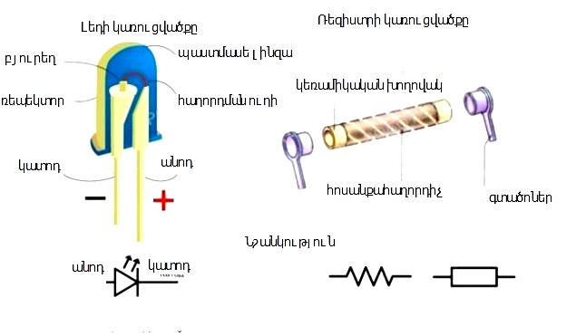

LED լույսի միացումը Arduino տպասալին
Լույսի թարթումը ամենապարզ ծրագիրն է։ Միկրոկոնտրոլերների հետ աշղատանք սկսելու համար։ Լեդը դա կիսաղարդչային տարր է, որը ծառայում է ցուցադրման և լուսավորության համար։ Եթե լեդը սղալ միացնենք, ապա մշտական հոսանք չի անցնելու , և չի լուսավորվի։ Բացի դա, հնարավոր է, որ լեդը շարքից դուրս գա։ Անոդը (լեդի երկար ոտքը) միանում է +ին․ (նկար 1)
Վերը նշված պարզ օրինակում ցույց է տրվում, թե ինչպես Arduino տպասալի օգնությամբ լույսը կթարթի։Սկզբի համար պարզագույն սխեմա կհավաքենք պլատայի վրա, միացնելով լեդը Arduino-ի թվային ելքին (պլատայի մուտքերն ու ելքերն անվանում են նաև (pin)):
Անհրաժեշտ էլեմենտներ
- Arduino Uno/ Arduino nNano/ Arduino Mega
- bredbouard
- լեդեր և ռեզիստոր(220օմ)
- լարեր «պապա-պապա»
Ինչի համար է անհրաժեշտ լեդը Arduino-ին միացնել ռեզիստորի օգնությա՞մբ։ Լեդում կա բյուրեղ, որը «վախենում է» բարձր հոսանքից։ Ռեզիստորը սահմանափակում է ընթացիկ ուժը(Ամպեր), որպեսզի լեդը չայրվի։
voidsetup () {
pinMode(13, OUTPUT); // պին 13 ելք
}
voidloop () {
digitalWrite(13,HIGH ); // միանում է լեդը
delay(1000); // սպասել 1 վրկ
digitalWrite(13,LOW ); // անջատվում է լեդը
delay(1000); //սպասել 1 վրկ
}
Կոդի մեկնաբանություն
1.setup()-ում գրված կոդը կատարվում է մեկ անգամ։ Այն անհրաժեշտ է միկրոկոնտրոլերի norm-ի և տարրեր կարգավորումների համար։
2.setup()-ի կատարումից հետո գործակվում է loop()-ը, որը կատարվում և անվերջ ցիկլում։սա կիրառում ենք, որպեսզի լեդը անընդհատ թարթի։
3.Setup() և loop() մեթոդները պետք է բոլոր ծրագրերում լինեն, եթե նույնիսկ դրանք դատարկ են։